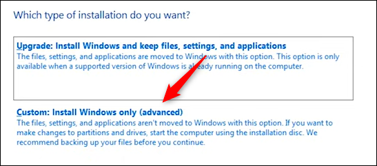

Instructions
How to Install Windows 10 from the USB Provided.
Please start by inserting the USB drive into the
destination PC, you’ll need to set the boot order so that the
computer loads the operating system from a different location—in this case,
from the USB instead of from the hard drive. To do this, you need to access the
boot menu on startup. When booting your computer, press the appropriate key to
open the BIOS or UEFI controls. The key that you need to press
depends on your computer, but it’s usually F11 or F12.
Once you’ve selected the USB drive from the boot
menu, your PC will reboot from the USB drive and ask you to press any key to
begin the setup of the installation media. At the beginning of the setup
process, you’ll need to choose the language to install, the time and currency
format, and the keyboard or input method. In most cases, you won’t need to
change anything here, but if you do, click the down arrow to display a list of
options, and then click the option that you want to select it.
Click "Next" to continue.
On the next screen, click “Install Now.”
You’ll briefly see a screen that lets you know that the setup is starting. After that, the Windows Setup window will appear. Here, enter the product key in the text box if you have one. If you don’t have a product key, then you can still run a limited version of Windows 10 that works—you’ll just need to enter a product key later to unlock everything.
Next, you’ll need to select which Windows 10 version to use. If you have a Windows 10 key, be sure to select the correct Windows 10 version, as keys only work for certain versions (In this case it is Windows 10 Pro). Click the version to select it, and then click “Next.”
On the next screen, check the box next to “I Accept the License Terms,” and then click “Next.”

The next screen asks you to select which type of installation you want to perform. Since we’re doing a fresh install, click “Custom: Install Windows Only (Advanced).”
Next, choose where you want to install Windows 10. If you have a brand new hard drive, it might say “Drive 0 Unallocated Space” under Name. If you have multiple drives, select the drive that you want to install the OS on, and then click “Next.”
Finally, the Wizard will begin installing the Windows files. The amount of time that the installation takes depends on the hardware you’re using. Once the Wizard finishes installing the files, your computer will reboot. In some unusual cases, you’ll get stuck in a boot install loop. If this happens, just remove the USB drive, and restart the computer.